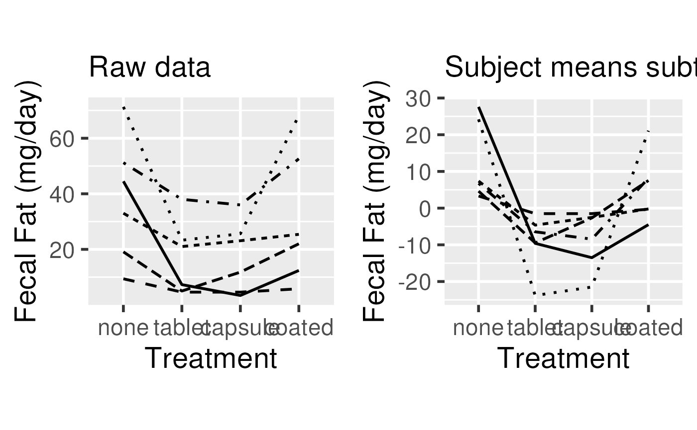

Session 9: Repeated Measures and Longitudinal Analysis I
Levi Waldron
session_lecture.RmdLearning objectives and outline
Learning objectives
Learning objectives:
- Identify and define hierarchical and longitudinal data
- Analyze correlated data using Analysis of Variance
- Define and calculate Intraclass Correlation
- Identify and define random and fixed effects
Textbook sections:
- Vittinghoff sections 7.1 (7.2-7.3 next class)
Intro: hierarchical and longitudinal data
What are hierarchical and longitudinal data?
- Knee radiographs are taken yearly in order to understand the onset of osteoarthritis
- An indicator of heart damage is measured at 1, 3, and 6 days following a brain hemorrhage.
- Groups of patients in a urinary incontinence trial are assembled from different treatment centers
- Susceptibility to tuberculosis is measured in family members
- A study of the choice of type of surgery to treat a brain aneurysm either by clipping the base of the aneurysm or implanting a small coil. The study is conducted by measuring the type of surgery a patient receives from a number of surgeons at a number of different institutions.
What is the distinction between hierarchical and longitudinal data?
- Longitudinal data are repeated measures over time
- Longitudinal data are a type of hierarchical data
- repeated measures are correlated, and nested within the observational unit (individual)
- Other non-longitudinal data can also be hierarchical
Definition: Hierarchical data are data (responses or predictors) collected from or specific to different levels within a study.
Important features of this type of data
- The outcomes are correlated across observations
- The predictor variables can be associated with different levels of a
hierarchy. e.g. we might be interested in:
- the volume of operations at the hospital,
- whether it is a for-profit or not-for-profit hospital,
- years of experience of the surgeon or where surgeons were trained,
- how the choice of surgery type depends on the age and gender of the patient.
Fecal Fat example
A Repeated Measures Example
- Lack of digestive enzymes in the intestine can cause bowel
absorption problems.
- This will be indicated by excess fat in the feces.
- Pancreatic enzyme supplements can alleviate the problem.
- fecfat.csv: a study of fecal fat quantity (g/day) for individuals given each of a placebo and 3 types of pills

Option 1: non-hierarchical analysis (wrong)
fit1way <- lm(fecfat ~ pilltype, data=dat)| Df | Sum Sq | Mean Sq | F value | Pr(>F) | |
|---|---|---|---|---|---|
| pilltype | 3 | 2008.60 | 669.53 | 1.86 | 0.1687 |
| Residuals | 20 | 7193.36 | 359.67 |
- Does not account for similarity of measurements within individual
- Would be correct if each treatment were given to a different individual
Option 2: 2-way AOV
- Accounts for individual differences in mean fecal fat
- Fits a coefficient for mean fecal fat per individual
- Getting closer
## Warning: Using `size` aesthetic for lines was deprecated in ggplot2 3.4.0.
## ℹ Please use `linewidth` instead.
## This warning is displayed once every 8 hours.
## Call `lifecycle::last_lifecycle_warnings()` to see where this warning was
## generated.
Option 2: 2-way AOV
fit1way <- lm(fecfat ~ pilltype, data=dat)| Df | Sum Sq | Mean Sq | F value | Pr(>F) | |
|---|---|---|---|---|---|
| pilltype | 3 | 2008.60 | 669.53 | 1.86 | 0.1687 |
| Residuals | 20 | 7193.36 | 359.67 |
fit2way <- lm(fecfat ~ subject + pilltype, data=dat)What happened??
- 1-way ANOVA correctly estimates the effect of pill type
- However, 1-way ANOVA fails to accommodate the correlation within subjects
- 1-way ANOVA over-estimates the residual variance
- under-estimates the significance of pill type
Correlations within subjects (ICC)
Correlations within subjects
- One-way ANOVA fails because it does not account for the correlation of measurements within-person
- How highly correlated are measurements on the same person? Consider subject , pill types and :
* This is a measure of how large the subject effect is, in relation to the error term
Correlation within subjects
- Equality 1:
- and terms are assumed to be constant, so do not enter into covariance calculation
- residuals are assumed to be independent
- Equality 2:
- covariance with self is variance
Recall is the term for individual in 2-way AOV. Now , will later be treated as a random variable
Correlation within subjects
Previous slide calculated covariance for numerator of correlation. Now calculate variance for the denominator ()
- Difference is that the independent residuals do contribute to
- Variance is broken into componenets due to subject and residual variance
Intuition behind correlations within subjects
Variance of the subject averages (279.4) is increased by correlation of measurements within individual.
Random and fixed effects
The next step: a mixed effects model
-
Two-way ANOVA is a fixed effects model:
- Assumption:
Instead of fitting a to each individual, assume that subject effects are selected from a distribution of possible subject effects: where
Here subject is a random effect, and pill type is a fixed effect.
This is also a random intercept model

Summary: correlations within subjects
- Subject-to-subject variability simultaneously raises or lowers all
the observations on a subject
- induces correlation of within-subject measurements
- Variability of individual measurements can be separated into that
due to subjects and that left to residual variance.
- 2-way ANOVA does not directly estimate variability due to subjects
- variance of coefficients for individual is not too far off
Summary: hierarchical data
- Estimates of coefficients (or “effect sizes”) are unchanged by hierarchical modeling
- Ignoring within-subject correlations results in incorrect estimates
of variance, F statistics, p-values
- not always “conservative”
- Intraclass Correlation (ICC) provides a measure of correlation induced by grouping
- Should be able to recognize fixed and random effects